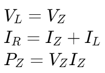

稳压二极管 | Zener Diode Regulation
稳压电路示例 | Regulator Circuit


稳压二极管与普通二极管的区别
普通二极管具有单向导电性，假如它被反向击穿，不具可逆性，将永久损坏。
而稳压二极管正是利用了它的反向击穿的特性，当被反向击穿时，稳压二极管反向电阻降低到一个很小的数值，在这个低阻区中电流增加而电压则保持恒定（即保持为 Vz），且不会被损坏。
稳压二极管与普通二极管的区别
普通二极管具有单向导电性，假如它被反向击穿，不具可逆性，将永久损坏。
而稳压二极管正是利用了它的反向击穿的特性，当被反向击穿时，稳压二极管反向电阻降低到一个很小的数值，在这个低阻区中电流增加而电压则保持恒定（即保持为 Vz），且不会被损坏。